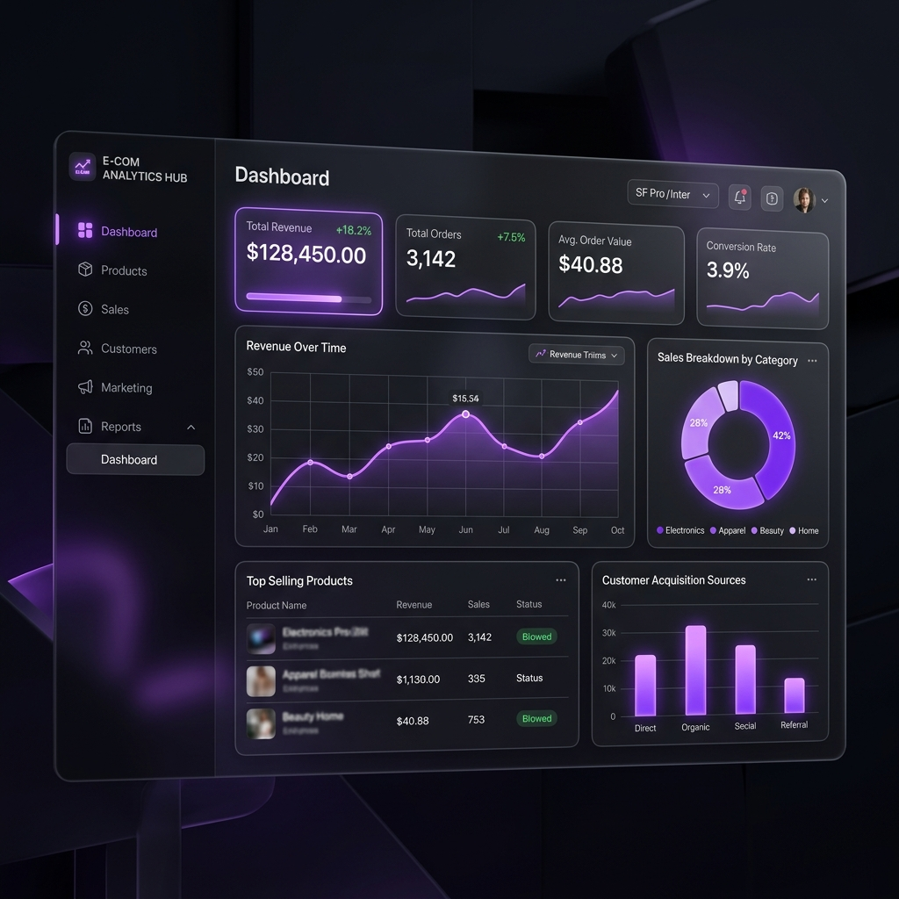

Software EngineeringVouched
AI-powered eCommerce product validation platform that helps entrepreneurs evaluate market demand, analyse competitors, estimate profitability, and optimise product listings before investment.
React
Node.js
Express
MongoDB
View Project